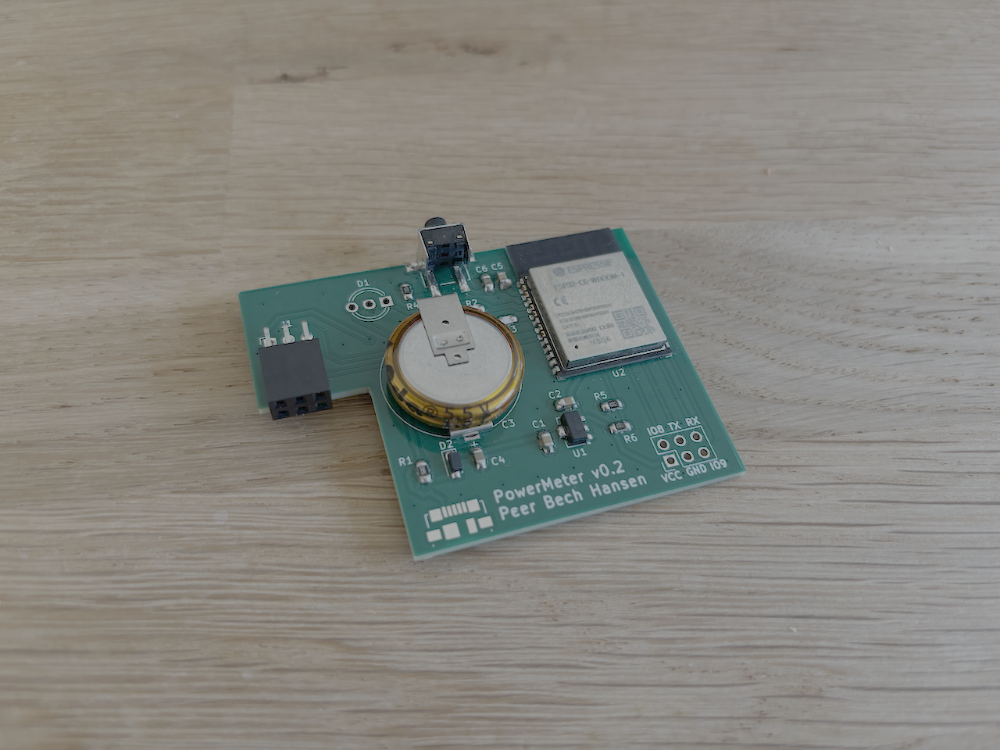
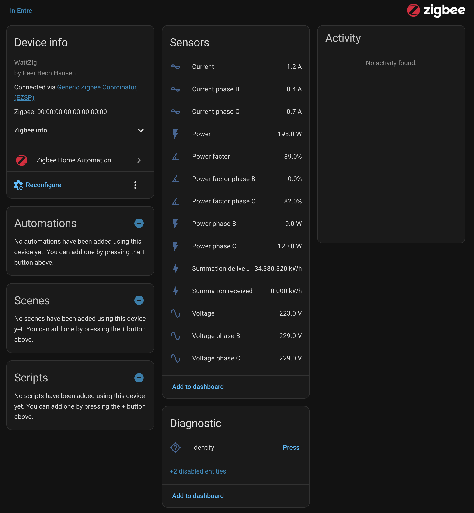

Open Zigbee Power Meter
WattZig is an open-source smart power meter reader built on the ESP32-C6. It reads 3-phase electrical measurements — voltage, current, active and reactive power, and power factor — via the DLMS protocol and transmits them wirelessly over Zigbee. It integrates directly with Home Assistant via ZHA, making detailed energy monitoring available without any cloud dependency.

